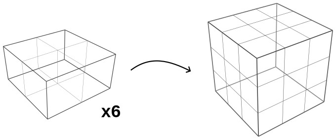
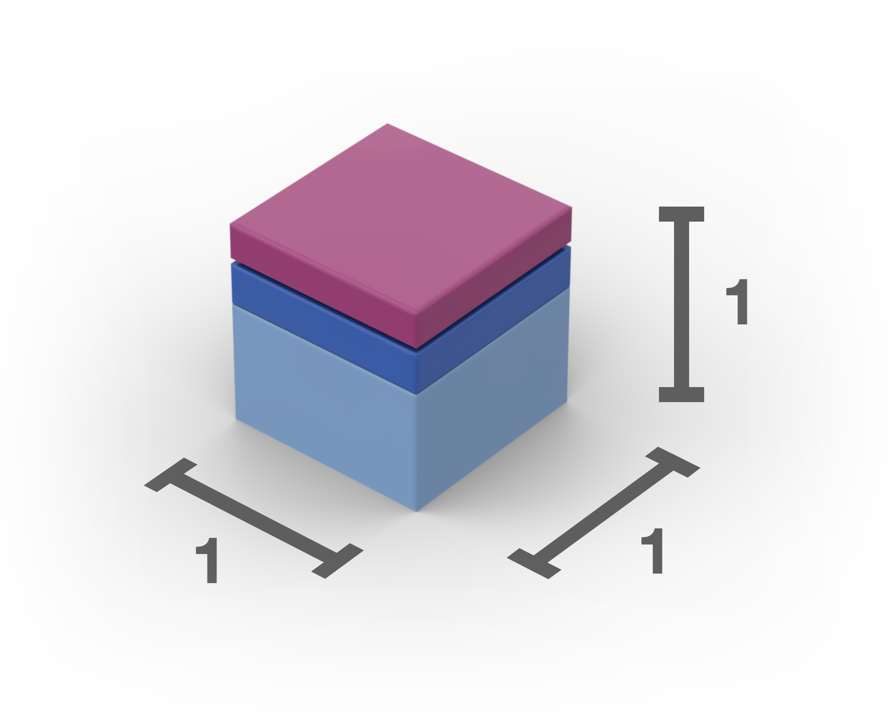
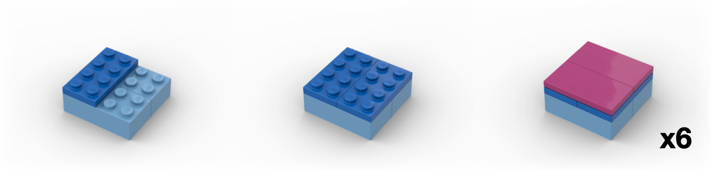

1 The Puzzle
Here’s a fun puzzle: Take six boxes, each \(1\times 2\times 2\) in size, and find a way to pack them into a \(3\times 3\times 3\) cube.

I learned about this puzzle through Donald Knuth’s The Art of Computer Programming, \(\S 7.2.2.1\). The six boxes have a total volume of 24 cubies (I’ll call a \(1\times 1\times 1\) unit a “cubie,” as Knuth does). They certainly have a chance of fitting into the 27 cubie spaces of the larger \(3\times 3\times 3\) volume. But the initial configurations I tried failed to fit more than five boxes in the space allowed:

You might be able to solve this by simply thinking about it. But it’s even more fun to play with a physical model.
Did you know that a \(2\times 2\) Lego brick with 2 tile-heights on top forms a perfect cube?

This allows us to construct the puzzle like so:
 
Here’s the hodgepodge model I built with my kids’ Legos:

I’ll write a little about the math behind this puzzle below, but for now I’ll give you a vertical break so you don’t accidentally see the solution. Try out the puzzle first!

2 The Solution
Here’s the solution: